Bonjour et bienvenue à la documentation en ligne des outils de recouvrement de votre ordinateur.
Votre intégrateur système a installé un ensemble d'outils qui, lorsque combinés avec ceux déjà inclus dans Windows 1X, vous permettront d'avoir l'esprit tranquille sachant que peu importe ce qu'il pourrait arriver à votre installation de Windows vous aurez toujours une solution pour la remettre en état de fonctionnement rapidement
Si cela n'a pas déjà été fait, nous vous recommandons d'immédiatement créer un média de recouvrement pour votre ordinateur.
Les outils de recouvrement de l'ordinateur sont un point d'accès central à plusieurs utilitaires comme :
Lors du lancement des outils de recouvrement, vous serez accueilli par le menu suivant. Vous trouverez une description de chacune des fonctions en dessous de l'image.
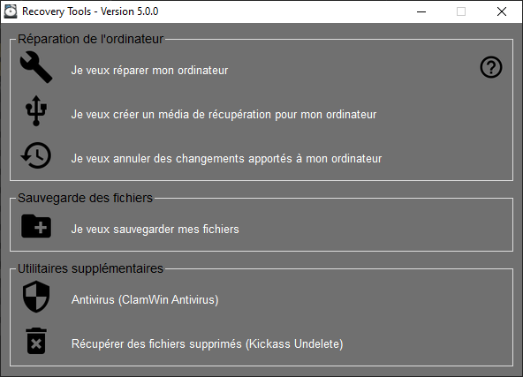Cliquer sur lancera l'environnement de recouvrement de Windows (WinRE) qui est un environnement de réparation incorporé à Windows 1X qui vous permet d'effectuer diverses opérations comme réparer les problèmes qui empêchent Windows de démarrer normalement ou de réinitialiser Windows (réinstallation de Windows). Un navigateur de fichiers hors-ligne (pour accéder à vos fichiers même si Windows ne fonctionne pas) a aussi été ajouté par votre intégrateur de système.
Cliquer sur lancera le créateur de média de recouvrement. Un média de recouvrement vous permet de complètement réinstaller Windows sur un nouveau disque dur ou lorsque l'environnement de recouvrement de Windows (WinRE) est incapable de réparer Windows. Veuillez prendre note qu'un média de recouvrement ne vous permet pas de conserver vos fichiers personnels. Nous vous recommandons de créer le média de recouvrement le plus rapidement possible.
Cliquer sur lancera un outil permettant de restaurer les fichiers et paramètres système permettant d'annuler les changements apportés par les mises-à-jour de Windows, les applications nouvellement installéed ou par les nouveaux pilotes de périphériques.
Cliquer sur lancera l'outil Historique des fichiers qui vous permet de configurer une sauvegarde périodique de vos fichiers personnels sur un périphérique USB ou de récupérer des fichiers précédemment sauvegardé sur ce disque.
Cliquer sur , si activé pour votre intégrateur système, lancera un antivirus indépendant qui peut vous aider à détecter et retirer des fichiers infectés si l'antivirus principal de votre ordinateur est devenu corrompu ou s'il a cessé de fonctionner. Cette application ne permet pas d'offrir l'analyse à la demande et ne doit être qu'utilisée qu'en cas d'urgence. Veuillez prendre note que vous devrez télécharger le catalogue de définition des virus lors que la première exécution et qu'il vous faudra donc un accès Internet fonctionnel.
Cliquer sur , si activé par votre intégrateur de système, lancera un outil vous permettant de récupérer des fichiers accidentellement effacés de votre ordinateur.
Windows 1X inclut un environnement de réparation (Windows Recovery Environment), une petite application en dehors de Windows, qui permet d'effectuer des diagnostics et des réparations de Windows. Cet environnement vous permet de réparer des problèmes d'amorçage, de réinstaller Windows ou même de récupérer un état antérieur du système d'exploitation. Un navigateur de fichiers hors-ligne a aussi été ajouté par votre intégrateur système pour vous permette un accès rapide à vos fichiers locaux en cas d'urgence.
L'environnement de réparation de Windows 1X peut être accédé à partir du menu principal ou automatiquement en cas de trois échecs d'amorçage du système.
Si Windows ne se lance pas correctement, vous pouvez essayer les options suivantes.
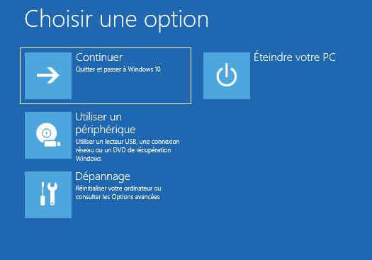Premièrement, cliquer sur "Dépannage".
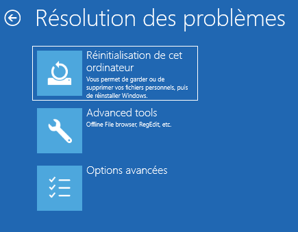Ensuite, cliquer sur "Options avancées".
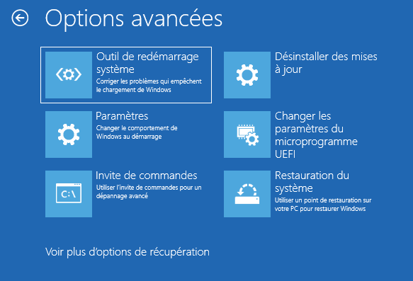Enfin, cliquer sur "Outil de redémarrage système" et suivez les instructions.
Vous pouvez aussi utiliser l'option "Restauration du système" pour annuler des changements récents sur votre système. Ceci permet souvent de corriger des problèmes suite à des mises à jour du système d'exploitation.
S'il vous est impossible de réparer votre ordinateur, ou si vous voulez simplement le repartir à neuf, vous pouvez utiliser l'environnement de réparation pour réinstaller Windows. Pour cela, veuillez suivre les étapes suivantes.
Premièrement, cliquer sur "Dépannage".
Ensuite, cliquer sur "Réinitialisation de cet ordinateur".
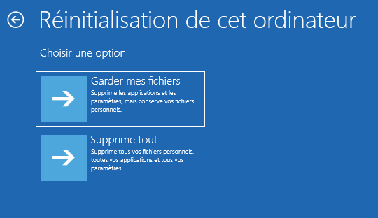Vous pouvez décider de conserver vos fichiers personnels (musique, documents, photos, etc.) ou de tout effacer. Dans les deux cas, les applications (sauf celles fournies par votre intégrateur système) seront effacées.
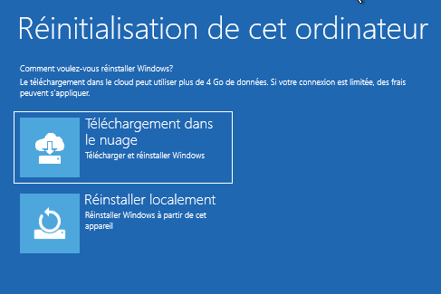Finalement, vous pouvez choisir entre une réinstallation à partir du nuage pour utiliser la dernière version de Windows 1X disponible (connexion filaire requises, Wifi non disponible) ou une réinstallation locale qui utilisera la même version de Windows 1X que celle présentement utilisée. La réinstallation prendra du temps et votre ordinateur redémarrera plusieurs fois.
Si votre ordinateur n'est pas en mesure de démarrer normalement et que vous devez accéder à des documents locaux d'urgence (travaux à compléter sur un autre ordinateur par exemple) vous pouvez utiliser le navigateur de fichiers installé par votre intégrateur système dans l'environnement de réparation de Windows. Avant de lancer le navigateur, veuillez brancher une clé ou un disque USB.
Premièrement, cliquer sur "Dépannage".
Ensuite, cliquer sur "Advanced tools".
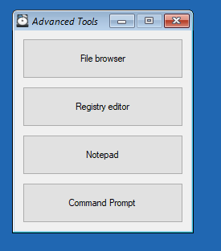Finalement, cliquer sur "File browser". Vous aurez alors accès à l'ensemble des fichiers de votre ordinateur et il vous sera possible de les copier sur un périphérique de stockage USB.
Même si votre ordinateur est équipé d'un environnement de réparation pour Windows que vous pouvez utiliser pour réinitialiser votre ordinateur, il vous est possible d'utiliser les outils de recouvrement pour créer un média de réinstallation (disque USB) pour votre ordinateur. Cela peut s'avérer utile si vous subissez un bris matériel de votre unité de stockage ou si les outils de réparation de Windows ne peuvent être utilisé pour réinstaller votre ordinateur.
À partir du menu principal, cliquer sur et suivez les instructions affichées. Comme certaines options peuvent changer d'un intégrateur système à l'autre, cette documentation ne pourra vous guider davantage dans ce processus.
Pour réinstaller Windows, veuillez simplement brancher le périphérique USB et le sélectionner au démarrage de l'ordinateur. Comme ce processus varie d'un ordinateur à l'autre, veuillez vous référer à la documentation de votre ordinateur puisque cette documentation est générique.
Windows crée automatiquement des points de restauration système lorsque des logiciels sont installés, lorsque des pilotes sont modifiés ou lors de mises à jour. En cas de problème, ces points de restauration vous permettent d'annuler les modifications apportées au système si celui-ci ne serait plus en mesure de fonctionner correctement.
À partir du menu principal, cliquer sur pour lancer la restauration du système. Ensuite, vous pouvez choisir la date à laquelle retourner le système. Si votre système n'est pas en mesure de s'allumer, vous pouvez aussi accéder à ces outils de restauration à partir de l'environnement de réparation de Windows.
Même si votre ordinateur inclut plusieurs outils pour rester en bon état de marche et pour facilement réinstaller Windows en cas de pépin, il est primordial d'effectuer des sauvegardes régulières de vos fichiers pour vous protéger des bris mécaniques, des virus et autres problèmes hors de votre contrôle. L'historique des fichiers, qui est inclut avec Windows, permet d'effectuer une sauvegarde de vos documents facilement et rapidement sur un périphérique USB que vous laissez attaché à votre ordinateur. Avant de continuer, veuillez connecter une clé USB ou un disque dur USB à votre ordinateur.
À partir du menu principal, cliquer sur pour exécuter l'historique des fichiers.
Lors de la première exécution, vous serez accueilli par l'écran suivant.
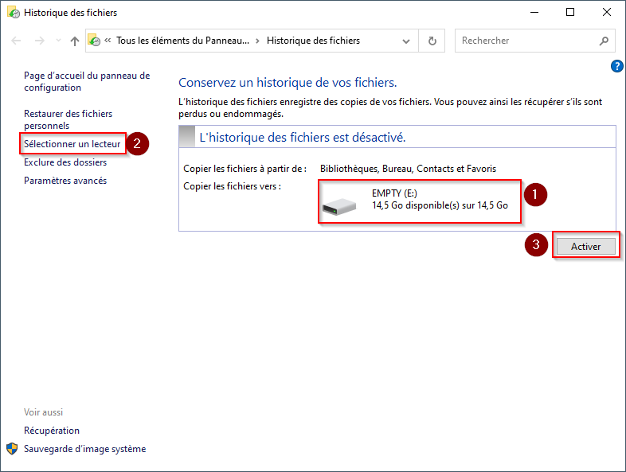Veuillez vous assurer sur le disque sélectionné comme destination (#1) est le bon. Si tel n'est pas le cas, cliquer sur "Sélectionner un lecteur" (#2) et choisissez le bon lecteur. Enfin, cliquer sur "Activer" (#3) pour activer la sauvegarde de vos fichiers.
Pour récupérer des fichiers, assurez-vous d'avoir connecté le lecteur USB utilisé pour la sauvegarde.
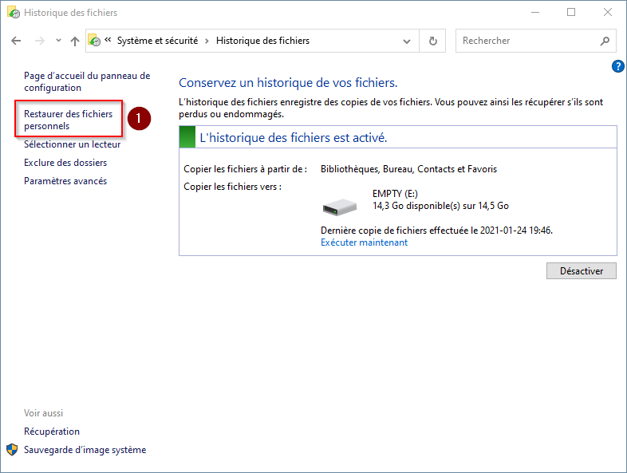Cliquer ensuite sur "Restaurer des fichiers personnels" (#1).
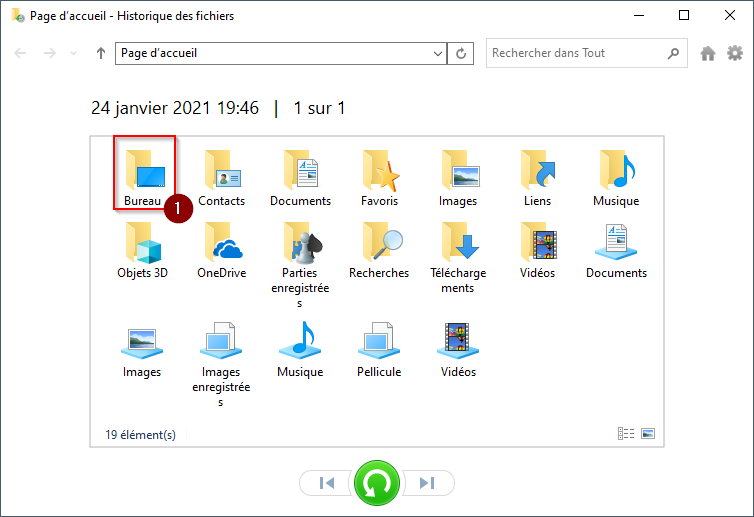Sélectionner ensuite le dossier contenant le fichier à récupérer en faisant un double-clic sur ce dernier (#1).
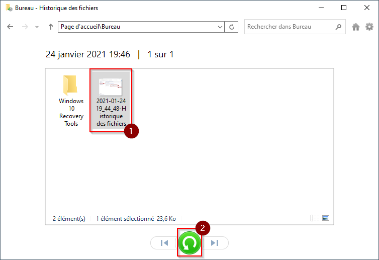Finalement, sélectionner le fichier à récupérer (#1) et cliquer sur la flèche (#2).
Votre ordinateur inclut un logiciel antivirus, soit Windows Defender qui est gratuit avec Windows 1X soit un antivirus tier installé par votre intégrateur de système. Cependant, il peut arriver qu'un antivirus devienne inopérant suite à une mise à jour manquée ou lors d'une attaque ciblée d'un virus. Les outils de récupération installés sur votre ordinateur intègrent un antivirus indépendant pour vous aider dans un tel cas. Veuillez prendre note que cet antivirus n'offre pas de protection en temps réel et ne doit être utilisé que pour les situations d'urgence ou lorsque votre antivirus principal n'est plus fonctionnel.
À partir du menu principal, cliquer sur pour exécuter l'antivirus.
Lors de la première exécution, il vous sera demandé d'effectuer une mise à jour.
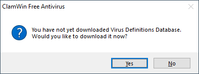Simplement cliquer sur "Yes" pour télécharger les fichiers requis.
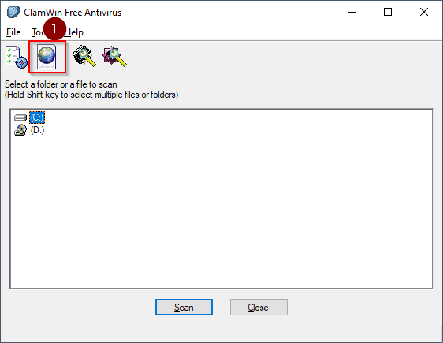Pour effectuer une mise à jour manuelle lors des utilisations subséquentes, cliquer sur le bouton de mise à jour manuelle (#1).
Pour rechercher des virus, veuillez suivre les étapes suivantes.
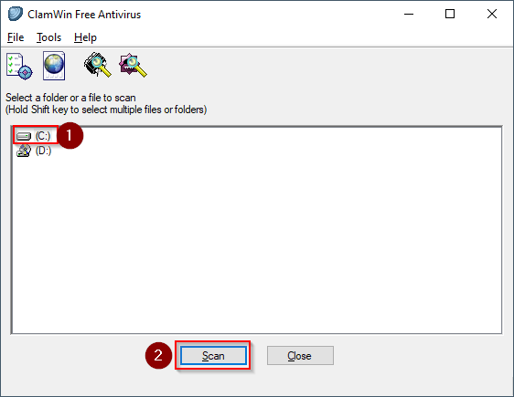Sélectionner le disque à analyser (#1) ou effectuer un double-clic sur ce dernier pour pouvoir sélectionner des fichiers à l'unité. Cliquer ensuite sur "Scan" (#2) pour lancer l'analyse.
Si, par mégarde, vous avez effacé un fichier important de votre ordinateur, il y a des chances qu'il soit encore récupérable. Pour le récupérer, pour pouvez utiliser l'application incluse avec les outils de recouvrement de votre ordinateur.
Cliquer sur pour lancer l'outil de récupération de fichier.
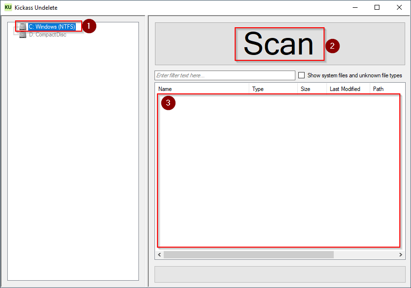Ensuite, cliquer sur le lecteur à analyser (#1) et sur "Scan" (#2). Lorsque l'analyse sera complétée vous pourrez sélectionner les fichiers à récupérer dans la zone prévue à cet effet (#3).
Le logiciel OEM / Factory recovery partition creator par zoobli.io a été utilisé pour créer les options de recouvrement de cet ordinateur. Du support est offert pour les intégrateur système qui veulent installer ce logiciel pour des utilisateurs mais aucun support direct ne sera offert à l'utilisateur final. Veuillez contacter votre intégrateur système si vous avez des questions ou besoin d'aide avec les outils de recouvrement.
Aucune garantie, ni implicite ou explicite, n'est offerte avec les outils de recouvrement inclus sur cet ordinateur. Ils offrent une solution de type "meilleur effort" pour vous aider à remettre votre ordinateur en état de marche mais ils peuvent ne pas fonctionner. Ni le créateur de ce logiciel, ni l'intégrateur système de votre ordinateur ni les créateurs des logiciels tiers utilisés ne peuvent être tenu responsable de la perte de données, de fonctionnalité, de productivité ou des problèmes rencontrés. Vous êtes responsable de la sauvegarde de vos fichiers. Effectuez toujours une sauvegarde!